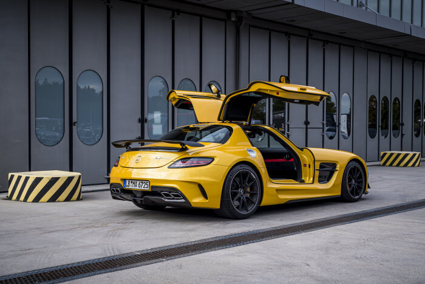

2013 Mercedes-Benz SLS AMG Black Series
Specifications
The SLS AMG Black Series features a handcrafted AMG 6.3L V8 engine that produces 622 horsepower and 468 pound-feet torque and can reach 0-60 mph in 3.5 seconds.
Favorite Features
Some of my favorite features about this car are the gullwing doors, the tail lights, and the shape of the car.
